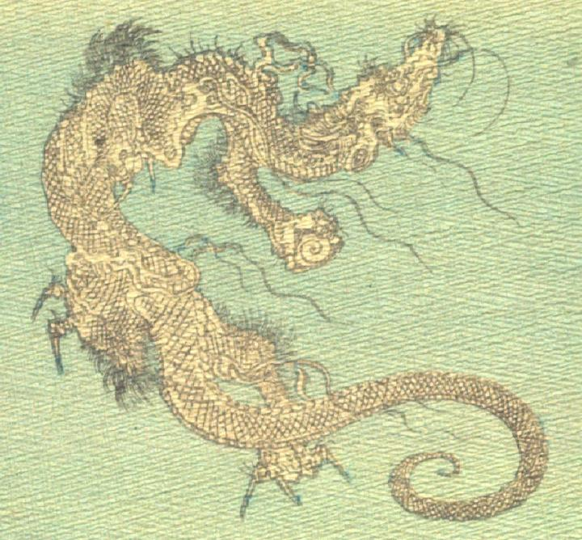

うねる龍。全身は鱗に覆われ、背にたてがみが、口元に長細いひげが生えている。脚には長く鋭い爪が3本生えており、右前脚で巻貝のようなものを掴んでいる。
著作者：J.Dautremer／出典：親書誌：U426_nichibunken_0104：Ourasima／日付：2006／資源識別子：U426_nichibunken_0104_0002_0000
Copyright (c)2010- International Research Center for Japanese Studies, Kyoto, Japan. All rights reserved.